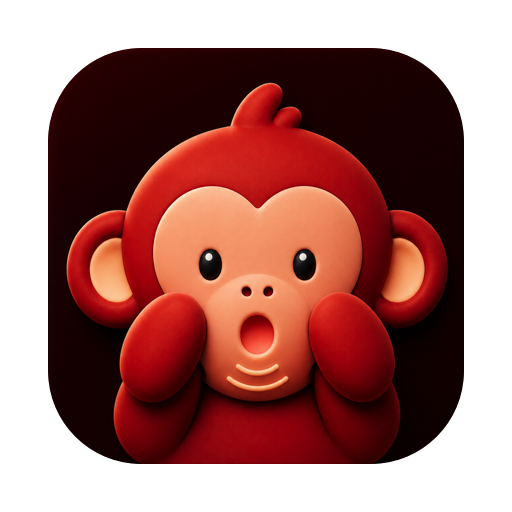

Turns your voice into text, wherever you are typing.
Entirely on your Mac. No account, nothing uploaded.
fn ⇧ to start, speak, press again to stop
Press a shortcut, say what you mean, press it again. Your words appear in whatever app you are already in: an email, Slack, a search bar or a code comment.
The menu bar shows a red dot while Speak is listening. Your words stay on the clipboard too, so ⌘V works wherever you need it.
Both off until you turn them on.
um so i think we should uh basically try the the parakeet model and see if it you know works better
So I think we should basically try the Parakeet model and see if it works better.
Punctuation, filler words, false starts and paragraphs, using the model built into macOS. Needs macOS 26. If it fails or takes too long you get the plain transcript, so a dictation is never lost.
Teach it the names it keeps getting wrong, and set exact replacements that run on every transcript. The replacements need no model, so they work on any supported macOS. Import brings across a dictionary you already built elsewhere.
Not as a policy. As an architecture.
Speak downloads a speech model once, then runs it on your own hardware using Apple’s MLX framework. Transcription never touches the network. There is no account because there is no server that could hold your recordings, even in principle.
Tidying up is local too. The optional polish pass uses the model built into macOS, running on your Mac like everything else here, so a polished transcript has still never left the machine.
The trade is worth stating plainly: when a local model gets a word wrong, it is wrong. There is no cloud fallback to catch it. A dictionary of your own names and jargon is the fix, and it is built in.
About 35 ms to turn a six-second sentence into text, measured warm on an M4 Max. In practice the words are on screen before you have finished letting go of the key. Most people speak at around 150 words a minute and type at around 40.
For whole conversations, there is Listen. It records your meetings on your Mac, writes them down and works out who said what.
Prefer Homebrew?
brew install --cask mugoosse/tap/speakApple Silicon, macOS 14 or later. The optional AI polish needs macOS 26.
The speech model downloads on first run only if you choose Parakeet. If you already use Listen with the same model, it is already on your disk, and Speak will find it rather than fetching it twice.